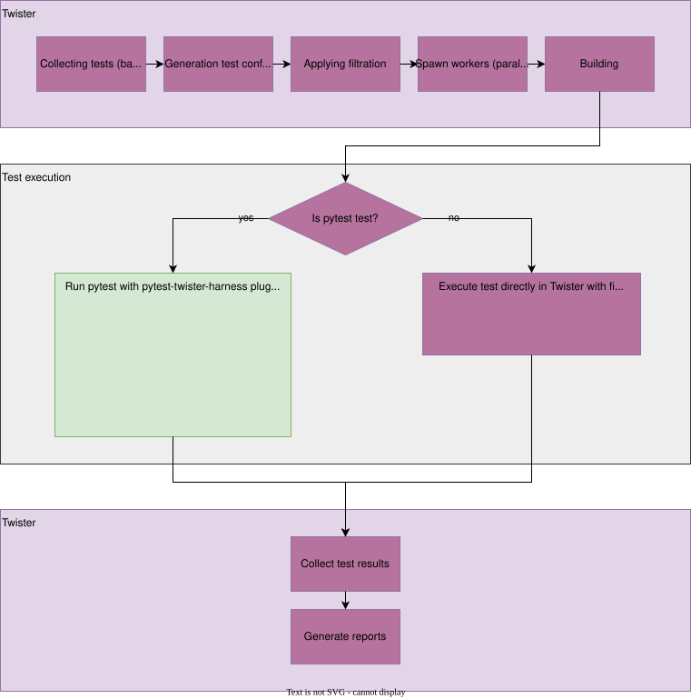

Integration with pytest test framework
Please mind that integration of twister with pytest is still work in progress. Not every platform type is supported in pytest (yet). If you find any issue with the integration or have an idea for an improvement, please, let us know about it and open a GitHub issue/enhancement.
Introduction
Pytest is a python framework that “makes it easy to write small, readable tests, and can scale to
support complex functional testing for applications and libraries” (https://docs.pytest.org/en/7.3.x/).
Python is known for its free libraries and ease of using it for scripting. In addition, pytest
utilizes the concept of plugins and fixtures, increasing its expendability and reusability.
A pytest plugin pytest-twister-harness was introduced to provide an integration between pytest
and twister, allowing Zephyr’s community to utilize pytest functionality with keeping twister as
the main framework.
Integration with twister
By default, there is nothing to be done to enable pytest support in twister. The plugin is
developed as a part of Zephyr’s tree. To enable install-less operation, twister first extends
PYTHONPATH with path to this plugin, and then during pytest call, it appends the command with
-p twister_harness.plugin argument. If one prefers to use the installed version of the plugin,
they must add --allow-installed-plugin flag to twister’s call.
Pytest-based test suites are discovered the same way as other twister tests, i.e., by a presence
of test/sample.yaml. Inside, a keyword harness tells twister how to handle a given test.
In the case of harness: pytest, most of twister workflow (test suites discovery,
parallelization, building and reporting) remains the same as for other harnesses. The change
happens during the execution step. The below picture presents a simplified overview of the
integration.

If harness: pytest is used, twister delegates the test execution to pytest, by calling it as
a subprocess. Required parameters (such as build directory, device to be used, etc.) are passed
through a YAML configuration file. When pytest is done, twister looks for a pytest report (results.xml) and
sets the test result accordingly.
How to create a pytest test
An example folder containing a pytest test, application source code and Twister configuration .yaml file can look like the following:
test_foo/
├─── pytest/
│ └─── test_foo.py
├─── src/
│ └─── main.c
├─── CMakeList.txt
├─── prj.conf
└─── testcase.yaml
An example of a pytest test is given at
samples/subsys/testsuite/pytest/shell/pytest/test_shell.py. Using the configuration
provided in the testcase.yaml file, Twister builds the application from src and then, if the
.yaml file contains a harness: pytest entry, it calls pytest in a separate subprocess. A sample
configuration file may look like this:
tests:
some.foo.test:
harness: pytest
tags: foo
By default, pytest tries to look for tests in a pytest directory located next to a directory
with binary sources. A keyword pytest_root placed under harness_config section in .yaml file
can be used to point to other files, directories or subtests (more info here).
Pytest scans the given locations looking for tests, following its default discovery rules.
Passing extra arguments
There are two ways for passing extra arguments to the called pytest subprocess:
From .yaml file, using
pytest_argsplaced underharness_configsection - more info here.Through Twister command line interface as
--pytest-argsargument. This can be particularly useful when one wants to select a specific testcase from a test suite. For instance, one can use a command:$ ./scripts/twister --platform native_sim -T samples/subsys/testsuite/pytest/shell \ -s samples/subsys/testsuite/pytest/shell/sample.pytest.shell \ --pytest-args='-k test_shell_print_version'
The command line arguments will extend those from the .yaml file. If the same argument is present in both places, the one from the command line will take precedence.
Fixtures
dut
Give access to a DeviceAdapter type object, that represents Device Under Test. This fixture is
the core of pytest harness plugin. It is required to launch DUT (initialize logging, flash device,
connect serial etc). This fixture yields a device prepared according to the requested type
(native, qemu, hardware, etc.). All types of devices share the same API. This allows for
writing tests which are device-type-agnostic. Scope of this fixture is determined by the
pytest_dut_scope keyword placed under harness_config section (more info
here).
from twister_harness import DeviceAdapter
def test_sample(dut: DeviceAdapter):
dut.readlines_until(regex='Hello world')
shell
Provide a Shell class object with methods used to interact with shell application.
It calls wait_for_promt method, to not start scenario until DUT is ready. The shell fixture
calls dut fixture, hence has access to all its methods. The shell fixture adds methods
optimized for interactions with a shell. It can be used instead of dut for tests. Scope of this
fixture is determined by the pytest_dut_scope keyword placed under harness_config section
(more info here).
from twister_harness import Shell
def test_shell(shell: Shell):
shell.exec_command('help')
mcumgr
Sample fixture to wrap mcumgr command-line tool used to manage remote devices. More information
about MCUmgr can be found here MCUmgr.
Note
This fixture requires the mcumgr available in the system PATH
Only selected functionality of MCUmgr is wrapped by this fixture. For example, here is a test with
a fixture mcumgr
from twister_harness import DeviceAdapter, Shell, McuMgr
def test_upgrade(dut: DeviceAdapter, shell: Shell, mcumgr: McuMgr):
# free the serial port for mcumgr
dut.disconnect()
# upload the signed image
mcumgr.image_upload('path/to/zephyr.signed.bin')
# obtain the hash of uploaded image from the device
second_hash = mcumgr.get_hash_to_test()
# test a new upgrade image
mcumgr.image_test(second_hash)
# reset the device remotely
mcumgr.reset_device()
# continue test scenario, check version etc.
unlaunched_dut
Similar to the dut fixture, but it does not initialize the device. It can be used when a finer
control over the build process is needed. It becomes responsibility of the test to initialize the
device.
from twister_harness import DeviceAdapter
def test_sample(unlaunched_dut: DeviceAdapter):
unlaunched_dut.launch()
unlaunched_dut.readlines_until(regex='Hello world')
Classes
DeviceAdapter
- class twister_harness.DeviceAdapter(device_config: DeviceConfig)
This class defines a common interface for all device types (hardware, simulator, QEMU) used in tests to gathering device output and send data to it.
- launch() None
Launch the test application on the target device.
This method performs the complete device initialization sequence:
Close any previously running application (cleanup)
Generate the execution command if not already set
Add any extra test arguments to the command
Start reader threads to capture device output
Launch the application (flash for hardware, execute for simulators)
The launch process varies by device type:
Hardware devices: Flash the application and establish serial communication. May connect before or after flashing depending on device configuration.
QEMU/simulators: Start subprocess and establish FIFO/pipe communication
Native simulators: Execute binary and connect via process pipes
- close() None
Disconnect, close device and close reader threads.
- readline(connection_index: int = 0, **kwargs) str
Read a single line from device output.
- Parameters:
connection_index – Connection port to read from (0=main UART, 1=second core, etc.)
kwargs – Additional keyword arguments (timeout, print_output)
- Returns:
Single line of text without trailing newlines
- readlines(connection_index: int = 0, **kwargs) list[str]
Read all available output lines produced by device from internal buffer.
- readlines_until(connection_index: int = 0, **kwargs) list[str]
Read lines from device output until a specific condition is met.
This method provides flexible ways to collect device output: wait for a specific pattern, collect a fixed number of lines, or get all currently available lines.
- Parameters:
connection_index – Index of the connection/port to read from (default: 0). For hardware devices: 0 = main UART, 1 = second core UART, etc. For QEMU and native: always use 0 (only one connection available)
kwargs –
Keyword arguments passed to underlying connection including:
regex - Regular expression pattern to search for
num_of_lines - Exact number of lines to read
timeout - Maximum time in seconds to wait (uses base_timeout if not provided)
print_output - Whether to log each line as it’s read (default: True)
- Returns:
List of output lines without trailing newlines
- Raises:
AssertionError – If timeout expires before condition is met
- write(data: bytes, connection_index: int = 0) None
Write data bytes to the target device.
Sends raw bytes to the device through the appropriate communication channel. The underlying transport mechanism varies by device type: Hardware devices write to serial/UART port, QEMU devices write to FIFO queue, and Native simulators write to process stdin pipes.
- Parameters:
data – Raw bytes to send to the device
connection_index – Index of the connection/port to write to (default: 0)
Shell
- class twister_harness.Shell(device: DeviceAdapter, prompt: str = 'uart:~$', timeout: float | None = None)
Helper class that provides methods used to interact with shell application.
- exec_command(command: str, timeout: float | None = None, print_output: bool = True) list[str]
Send shell command to a device and return response. Passed command is extended by double enter sings - first one to execute this command on a device, second one to receive next prompt what is a signal that execution was finished. Method returns printout of the executed command.
- wait_for_prompt(timeout: float | None = None) bool
Send every 0.5 second “enter” command to the device until shell prompt statement will occur (return True) or timeout will be exceeded (return False).
- get_filtered_output(command_lines: list[str]) list[str]
Filter out prompts and log messages
Take the output of exec_command, which can contain log messages and command prompts, and filter them to obtain only the command output.
- Example:
>>> # equivalent to `lines = shell.exec_command("kernel version")` >>> lines = [ >>> 'uart:~$', # filter prompts >>> 'Zephyr version 3.6.0', # keep this line >>> 'uart:~$ <dbg> debug message' # filter log messages >>> ] >>> filtered_output = shell.get_filtered_output(output) >>> filtered_output ['Zephyr version 3.6.0']
- Parameters:
command_lines – List of strings i.e. the output of exec_command.
- Returns:
A list of strings containing, excluding prompts and log messages.
Examples of pytest tests in the Zephyr project
MCUmgr tests - tests/boot/with_mcumgr
LwM2M tests - tests/net/lib/lwm2m/interop
GDB stub tests - tests/subsys/debug/gdbstub
FAQ
How to flash/run application only once per pytest session?
dutis a fixture responsible for flashing/running application. By default, its scope is set asfunction. This can be changed by adding to .yaml filepytest_dut_scopekeyword placed underharness_configsection:harness: pytest harness_config: pytest_dut_scope: sessionMore info can be found here.
How to run only one particular test from a python file?
This can be achieved in several ways. In .yaml file it can be added using a
pytest_rootentry placed underharness_configwith list of tests which should be run:harness: pytest harness_config: pytest_root: - "pytest/test_shell.py::test_shell_print_help"Particular tests can be also chosen by pytest
-koption (more info about pytest keyword filter can be found here ). It can be applied by adding-kfilter inpytest_argsin .yaml file:harness: pytest harness_config: pytest_args: - "-k test_shell_print_help"or by adding it to Twister command overriding parameters from the .yaml file:
$ ./scripts/twister ... --pytest-args='-k test_shell_print_help'
How to get information about used device type in test?
This can be taken from
dutfixture (which represents DeviceAdapter object):device_type: str = dut.device_config.type if device_type == 'hardware': ... elif device_type == 'native': ...
How to rerun locally pytest tests without rebuilding application by Twister?
This can be achieved by running Twister once again with
--test-onlyargument added to Twister command. Another way is running Twister with highest verbosity level (-vv) and then copy-pasting from logs command dedicated for spawning pytest (log started byRunning pytest command: ...).First, run scenario with Twister:
$ west twister -vv -ll debug -T samples/subsys/testsuite/pytest/shell \ -s sample.pytest.shell --device-testing -p nrf54l15dk/nrf54l15/cpuapp --device-serial \ /dev/ttyACM1 --west-flash=--eraseTwister automatically generates a configuration file
twister_pytest_config.yamlin the build directory containing all test parameters including device configuration etc.Then export the required PYTHONPATH environment variable if not already set:
$ export PYTHONPATH=$ZEPHYR_BASE/scripts/pylib/pytest-twister-harness/srcFinally, run pytest command:
$ pytest -s -v -p twister_harness.plugin \ --twister-config=twister-out/.../sample.pytest.shell/twister_pytest_config.yaml \ samples/subsys/testsuite/pytest/shell/pytest
Is this possible to run pytest tests in parallel?
Basically
pytest-harness-pluginwasn’t written with intention of running pytest tests in parallel. Especially those one dedicated for hardware. There was assumption that parallelization of tests is made by Twister, and it is responsible for managing available sources (jobs and hardwares). If anyone is interested in doing this for some reasons (for example via pytest-xdist plugin) they do so at their own risk.
Limitations
Not every platform type is supported in the plugin (yet).